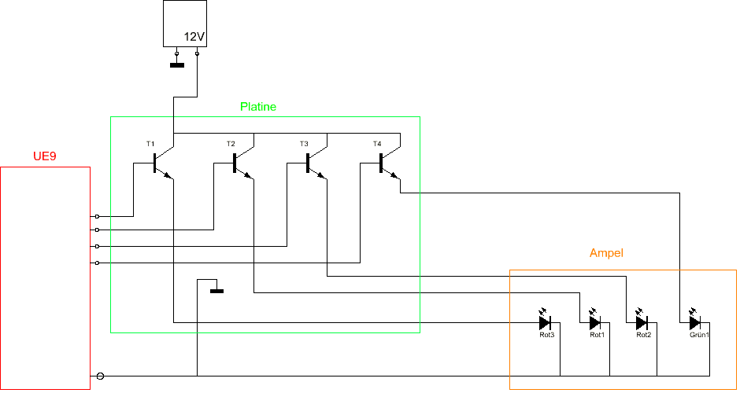

Um eine visuelle Anzeige für Rennstart und -stopp zur Verfügung zu stellen, entschieden wir uns dafür, eine Ampel im „Formel-1-Stil“ zu bauen. Diese Ampel besteht aus 8 großen LEDs, welche an einem rechteckigen Holzbrett angebracht sind. Sie befindet sich direkt an der Zeitmessbrücke und ist somit besonders gut bei Start- und Zieleinfahrt von den Fahrern einsehbar.
Die Startreihenfolge ist an jene der Formel-1 angelehnt und verläuft wie folgt:
- erste Reihe rot
- zweite Reihe rot
- dritte Reihe rot
- Reihe eins, zwei und drei aus, vierte Reihe grün
Die LEDs werden dabei vom UE9 angesteuert, wobei die Leistungsverstärkung mittels Transistoren gewährleistet wird. Sie werden mit 12V Spannung betrieben.
Unerwarteterweise bereitete uns die Ampel mit am meisten Schwierigkeiten, da es wiederholt Probleme mit der Verstärkerschaltung gab und die richtige Reihenfolge für das Aufleuchten der LEDs lange von Problemen verfolgt war. Dieses Problem konnten wir mit viel Geduld lösen, sodass die LEDs letztendlich in richtiger Reihenfolge aufleuchten.